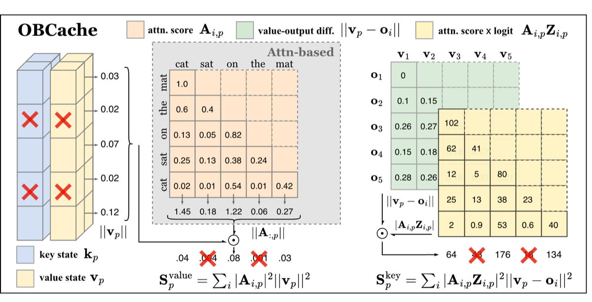

Why it matters왜 중요한가
The right question isn't "which token got the most attention" but "which token, if dropped, breaks the output the most."
올바른 질문은 "어느 토큰이 attention을 가장 많이 받았나"가 아니라 "어느 토큰을 버리면 출력이 가장 망가지나"이다.
A 1M-token LLaMA-3.1-8B needs over 120GB just to hold its KV cache — beyond most GPUs. Eviction trims this, but the standard signal (accumulated attention) is a proxy: it tells you how strongly a token is attended to, not how much its key-value pair shapes the actual attention output. A token with large attention but a tiny value norm may be safe to drop; one with modest attention but a value that strongly defines the output may be critical. OBCache makes that distinction principled, treating the KV matrices as pruning variables and minimizing the perturbation in attention outputs via a second-order Taylor expansion — the same machinery behind classical Optimal Brain Damage.
1M 토큰 LLaMA-3.1-8B은 KV 캐시만으로 120GB 이상을 요구한다 — 대부분 GPU 한계를 넘는다. eviction이 이를 줄이지만, 표준 신호(누적 attention)는 대리값일 뿐이다: 토큰이 얼마나 주목받는지는 알려줘도, 그 key-value 쌍이 실제 attention 출력을 얼마나 좌우하는지는 알려주지 않는다. attention은 크지만 value 노름이 작은 토큰은 버려도 되고, attention은 보통이어도 value가 출력을 강하게 정의하는 토큰은 핵심일 수 있다. OBCache는 KV 행렬을 가지치기 변수로 두고 attention 출력의 섭동을 2차 Taylor 전개로 최소화 — 고전 Optimal Brain Damage와 동일한 원리 — 하여 이 구분을 원리적으로 만든다.

By the numbers핵심 숫자
LLaMA-3.1-8B1M 토큰 LLaMA-3.1-8B의
KV 캐시 용량
(value · key · joint)닫힌 형태 점수 3종
(value · key · joint)
(H2O·TOVA·SnapKV·AdaKV)업그레이드한 베이스라인
(H2O·TOVA·SnapKV·AdaKV)
(6 task categories)LongBench 데이터셋
(6개 과제 범주)
LLaMA-3.1-8B · Qwen-2.5-7B백본 2종
LLaMA-3.1-8B · Qwen-2.5-7B
(perplexity eval)PG19 평균 책 길이
(perplexity 평가)
Results — drop-in scores, consistent lift결과 — 끼워넣는 점수, 일관된 향상
| Setting | Method | + OBCACHE-K | Δ |
|---|---|---|---|
| 40% KV · H2O | 53.14 | 53.43 | +0.29 |
| 40% KV · AdaKV | 52.11 / 51.02 | 52.07 / 51.13 | +0.11 |
| 10% KV · AdaKV | 52.03 | 51.26→100.0* | recall↑ |
* On the synthetic-retrieval column at 10% KV, AdaKV's 97.5 rises to 100.0 with OBCACHE-K — gains concentrate under tight budgets and on retrieval-heavy tasks, where output-aware scoring matters most.
* 10% KV의 합성-검색 항목에서 AdaKV의 97.5가 OBCACHE-K로 100.0이 된다 — 향상은 예산이 빡빡할수록, 검색 중심 과제일수록 집중된다(출력-인지 점수가 가장 중요한 영역).
In one diagram한 장의 그림
Idea: cache eviction as Optimal Brain Damage아이디어: 캐시 eviction을 Optimal Brain Damage로
Output-aware objective
Instead of "how attended is token p," minimize ‖Ô − O‖²F — the change in attention output when p's KV pair is removed. The true future error is unobservable, but it's approximated by the pruning-induced error on recent historical outputs.
"토큰 p가 얼마나 주목받나" 대신, p의 KV 쌍을 제거했을 때 attention 출력의 변화 ‖Ô − O‖²F를 최소화한다. 진짜 미래 오차는 관측 불가하지만, 최근 출력에 대한 가지치기 유발 오차로 근사한다.
Closed-form saliency
A second-order Taylor expansion (OBD) with a row-wise diagonal Hessian assumption yields three scores: Svalue=Σ|Ai,p|²‖vp‖², a key score with logits Zi,p and ‖vp−oi‖², and a joint score. Existing attention scores fall out as a degenerate special case.
2차 Taylor 전개(OBD)와 행 단위 대각 Hessian 가정으로 세 점수가 나온다: Svalue=Σ|Ai,p|²‖vp‖², logit Zi,p·‖vp−oi‖²를 담은 key 점수, 그리고 joint 점수. 기존 attention 점수는 이 일반식의 퇴화된 특수 사례로 떨어진다.
How it works어떻게 작동하나
- Define the objective목적함수 정의Treat K and V as pruning variables; the cost of removing token p is the Frobenius-norm change in the attention output, ‖Ô − O‖²F.K·V를 가지치기 변수로 두고, 토큰 p 제거 비용을 attention 출력의 Frobenius 노름 변화 ‖Ô − O‖²F로 정의.
- Taylor-expand (OBD)Taylor 전개(OBD)Expand to second order around the unperturbed point. First-order terms vanish (Ô−O=0 there); a diagonal Hessian for row-wise removal leaves a clean per-token sum.섭동 없는 지점에서 2차까지 전개. 1차항은 소거(그 지점에서 Ô−O=0), 행 단위 제거의 대각 Hessian으로 토큰별 합만 남는다.
- Read off three scores세 점수 도출Get value-only, key-only, and joint key-value saliency in closed form — incorporating attention weights, value norms, pre-softmax logits, and the value-output gap.value 전용·key 전용·joint key-value 중요도를 닫힌 형태로 — attention 가중치, value 노름, pre-softmax logit, value-출력 격차를 함께 반영.
- Plug into any pipeline아무 파이프라인에 삽입Swap the heuristic score inside H2O/TOVA/SnapKV/AdaKV (and dynamic decoding with a recent window) — same strategy, better token selection, for both prefill and decoding.H2O/TOVA/SnapKV/AdaKV(및 recent-window 동적 디코딩)의 휴리스틱 점수만 교체 — 전략은 그대로, prefill·decoding 모두에서 더 나은 토큰 선택.
What to take away그래서, 가져갈 것
A unifying theory, not a new trick. OBD turns ad-hoc attention heuristics into special cases of one output-perturbation objective — a principled lens for the whole eviction literature.
새 트릭이 아니라 통합 이론. OBD가 임시방편 attention 휴리스틱들을 하나의 출력-섭동 목적함수의 특수 사례로 만든다 — eviction 문헌 전체를 보는 원리적 렌즈.
Value states finally count. A token's importance is the product of attention AND value norm — prior methods silently assumed value norms were uniform.
value 상태가 드디어 반영. 토큰 중요도는 attention과 value 노름의 곱 — 기존 방법은 value 노름이 균일하다고 암묵적으로 가정했다.
Wins concentrate where it's hard. Gains are largest under tight budgets and on retrieval (Needle-in-a-Haystack), exactly where bad eviction is most punishing.
어려운 곳에서 이긴다. 향상은 예산이 빡빡하고 검색(Needle-in-a-Haystack)일 때 가장 크다 — 잘못된 eviction이 가장 뼈아픈 영역.
Zero-friction adoption. Closed-form, training-free, accumulable over decoding — it's a drop-in replacement, not a re-architecture.
마찰 없는 도입. 닫힌 형태·학습 불필요·디코딩 누적 가능 — 재설계가 아니라 그대로 끼우는 교체.